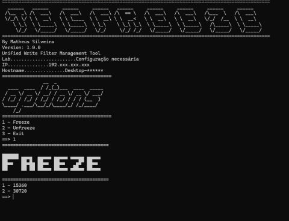

← voltar ao portfólio
$ cat tecfreeze/README.md
TecFreeze
ferramenta interna · código privado
Automação em Python para gerenciar o Unified Write Filter (UWF) em laboratórios de informática com Windows Enterprise/Education.

Execução real no terminal — banner, identificação do laboratório e menu de Freeze.
$ cat objetivo.txt
Em laboratórios de informática, é comum usar o Unified Write Filter do Windows para "congelar" o estado do disco — qualquer alteração feita pelos alunos some no próximo reboot. O problema é que ativar e desativar esse filtro, trocando os overlays conforme o tamanho da atualização, é manual e repetitivo em cada máquina.
O TecFreeze automatiza isso: identifica a máquina automaticamente pela rede, aplica o freeze ou unfreeze certo, e reinicia o sistema sozinho. Uso essa ferramenta no meu dia a dia administrando os laboratórios da Etec.
$ cat funcionalidades.txt — v1.0.0
- Freeze utilizando Overlay de 15360 MB
- Freeze utilizando Overlay de 30720 MB
- Unfreeze do sistema
- Execução direta dos comandos UWF via Python
- Interface em terminal com banner ASCII personalizado
- Detecção automática da máquina pela rede
- Identificação automática do laboratório
- Exibição do endereço IP e do hostname
- Reinicialização automática após aplicação das alterações
- Código modularizado (main / freeze / network)
- Compatível com Windows Enterprise e Education
$ cat stack.txt
Python 3.13
subprocess
UWF
Windows
CLI
Requisitos: Windows Enterprise ou Education, UWF habilitado, permissões de administrador.
$ cat roadmap_futuro.txt
- Mover a identificação de laboratório (hoje fixa no código) para um arquivo de configuração em JSON, eliminando a necessidade de editar código a cada ambiente novo.
$ cat aviso.txt
Por que é privado: o código roda em máquinas reais de produção, nos laboratórios onde trabalho. Mantenho fechado para evitar que a ferramenta seja usada sem autorização nesse ambiente específico. Desenvolvido e usado apenas em sistemas sob minha administração.